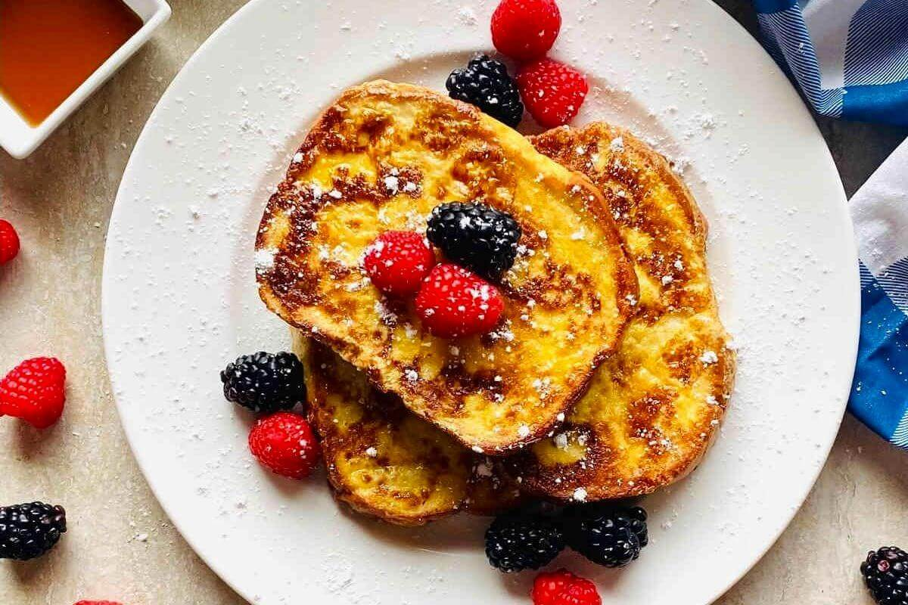

Anabolic French Toast

Description
This anabolic French toast is packed with protein and absolutely delicious. This anabolic protein French toast recipe has easy modifications to suit your macronutrient and dietary requirements including egg white French toast, high protein French toast, yogurt French toast and more! Meal prep French toast doesn’t have to be boring!
Whether you are looking to lose weight, build muscle or train for your next fitness or weight lifting competition, anabolic French toast is the way to go!
Ingredients
- Eggs and/or Egg Whites
- Milk
- Sugar Free Syrup
- Vanilla Extract
- Ground Cinnamon
- Salt
- Bread
- Oil or Butter
Steps to make your Anabolic French Toast
- Whisk together eggs, egg whites, milk, salt, sugar free syrup, vanilla extract, salt and cinnamon in baking dish or bowl.
- Coat each bread slice with egg/milk mixture (top and bottom). Make sure each slice of bread is well coated.
- On medium/high heat, add oil or butter to skillet, frying pan or griddle. Place bread slices in single layer in pan and cook until golden brown on each side (approximately 2-3 minutes).
Go Back Home